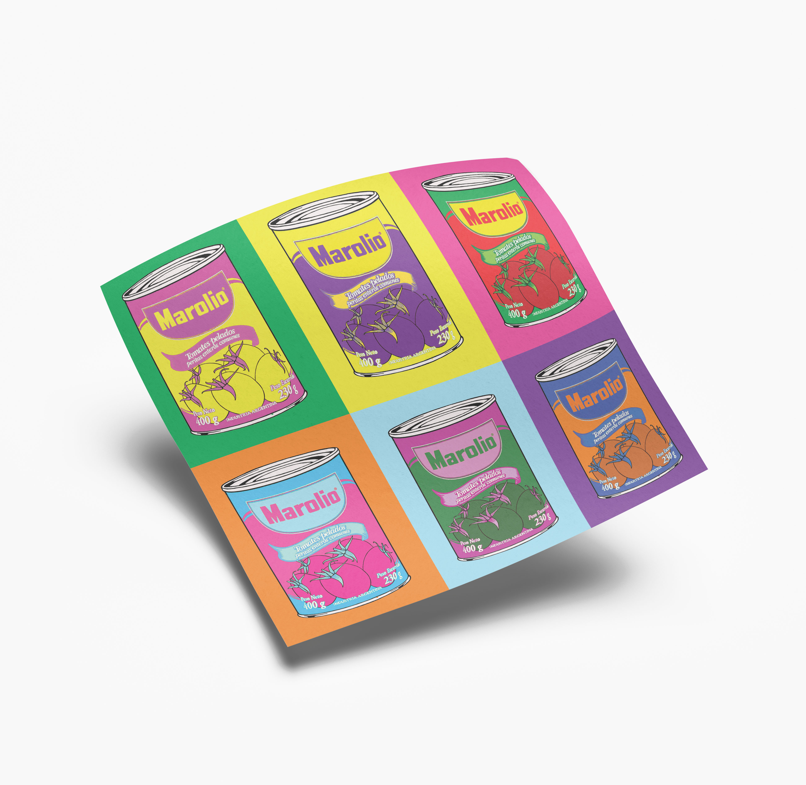
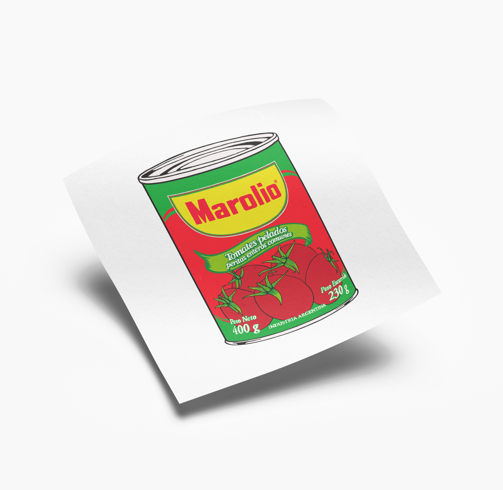
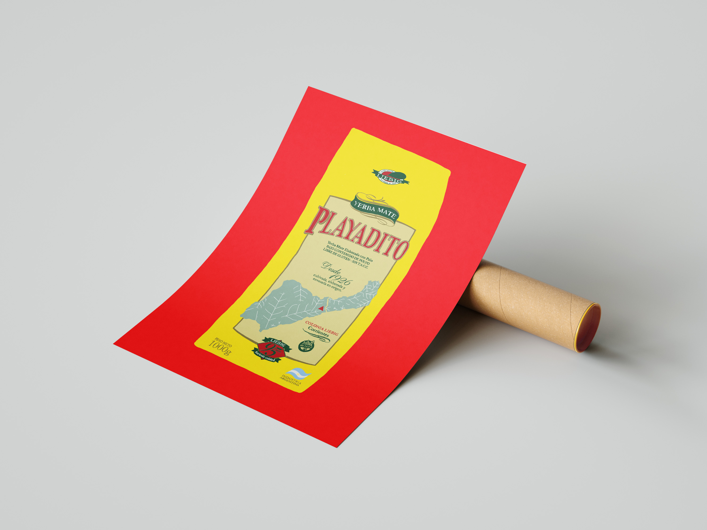
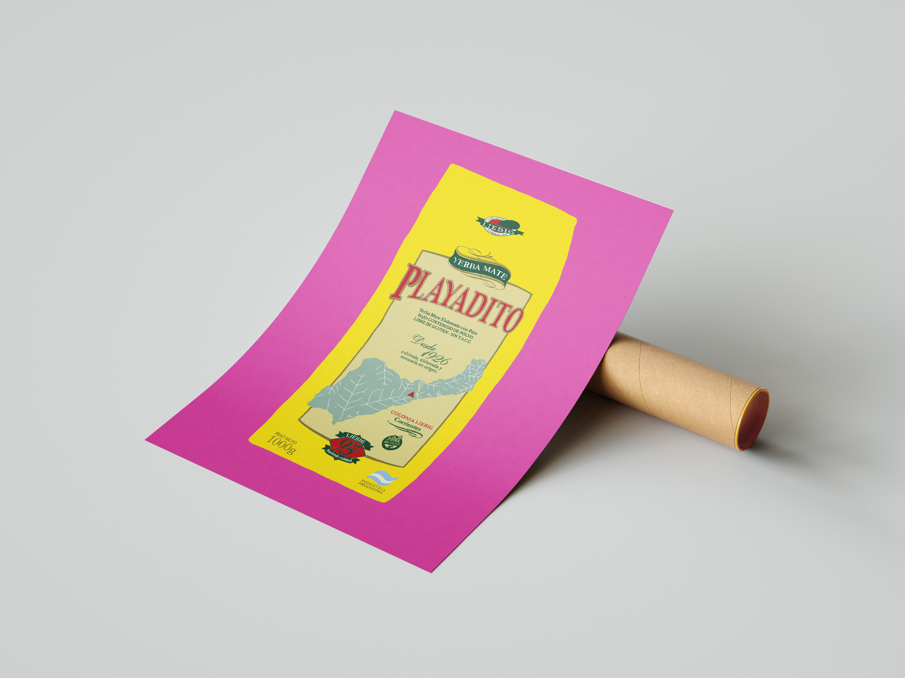

Mateo Van Thienen
nosotros no comemos campbell©, comemos marolio©: "una de las marcas más elegidas por los argentinos". también tomamos mate, y playadito es la yerba que más me gusta.




Diseñado con bootstrap por Mateo Van Thienen © 2025